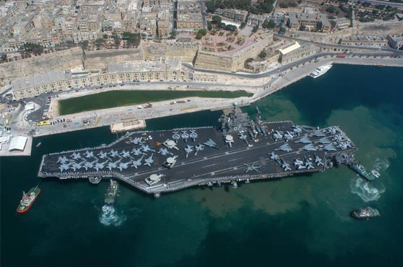
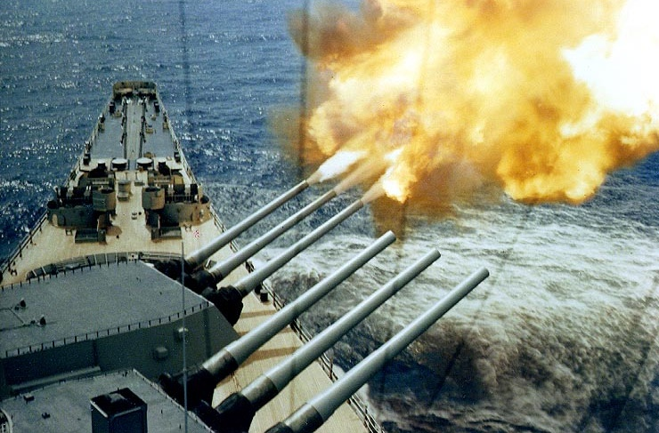
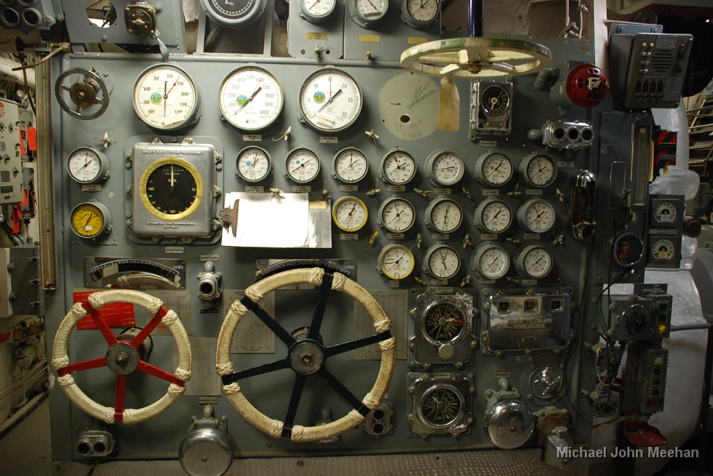
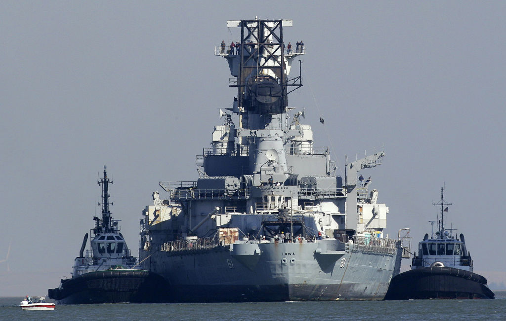

Eindopdracht
De eindopdracht voor dit vak is om het spel zeeslag te maken in je browser. Niet zomaar een zeeslag, maar eentje die je online tegen een computer kan spelen of tegen iemand anders uit jouw klas. We hebben daarvoor een API gemaakt waarmee je moet communiceren om het spel te spelen. De documentatie daarvan vind je op deze pagina
Je mag jouw versie zo mooi maken als je zelf wil, maar het moet wel aan onderstaande eisen voldoen. Begin niet te lang met wachten om aan de opdracht te beginnen, je hebt zeker een paar weken nodig om het goed af te maken!

Organisatorische eisen
- Je maak het project in duo's. Uitzonderingen moeten eerst worden overlegd met de practicumdocent.
- Jullie moeten allebei alle code goed kunnen uitleggen. "Ik weet niet hoe dat werkt want dat heb ik niet gemaakt" levert je minpunten op.
- Je hoeft het project niet in te leveren. Je laat deze tijdens het assessment aan de assessor zien.
- De eerste assessments beginnen op maandag 22 juni in week 9. Hou deze datum als deadline voor je project aan. Het inschrijfrooster komt in week 7 of 8 beschikbaar.

Functionele eisen:
- Het spel doorloopt verschillende fases. Een paar fases zijn bijvoorbeeld: Spel uitzoeken, schepen plaatsen, mijn beurt om een vakje te schieten, tegenstanders beurt, einde spel. Elke fase heeft zijn eigen user interface en regels, je mag bijvoorbeeld niet zelf een vakje schieten als het de beurt van de tegenstander is.
- Bij het uitzoeken van een spel kan de gebruiker kiezen uit 'Speel tegen een computer' of 'Speel tegen iemand anders'.

Technische eisen
- Alle code is geschreven in JavaScript, dus geen PHP of andere server-side talen.
- Het hele spel wordt gespeeld op één enkele pagina, gebruik dus geen iframes of links naar andere pagina's
- Plaats alle JavaScript code in losse JavaScript bestanden die je include in de HTML. Plaats geen JavaScript in de HTML zelf.
- Je mag geen gebruik maken van JavaScript frameworks zoals Angular, React.js of Backbone. jQuery is toegestaan. Overleg altijd even met je practicumdocent als je JavaScript libraries wilt gebruiken die specifieke functionaliteit makkelijker maken (zoals Three.js of SoundJS).
- Zorg voor overzichtelijke leesbare JavaScript code. Code die geminified is kunnen we tijdens het assessment niet beoordelen.
- Maak gebruik van constructor functies en prototypes om je code op te delen in verschillende soorten objecten. Denk bijvoorbeeld aan:
GameList, Game, Board, Ship en Square. Zorg ervoor dat minstens 50% van je code in de 'methodes' zitten van deze objecten (Dat is minder moeilijk dan het lijkt, in alle C# en Java die je tot nu toe hebt geschreven staat 100% van je code in methodes)
- Gebruik onze API om online tegen iemand anders zeeslag te kunnen spelen. Alle API aanroepen maak je doormiddel van AJAX requests. Je mag hier jQuery voor gebruiken.

Extra eisen
Heb je alle functionele goed geimplementeerd? Dan heb je een 7, je kan dan nog 3 bonuspunten verdienen door extra eisen te implementeren:
- Maak het spel extra mooi met animaties of geluidjes.
- Maak een drag & drop interface voor het plaatsen van scheepjes op het speelbord.
- Voor de absolute 10 moet je zelf nog iets verzinnen. Misschien een knop die automatisch een slimme zet suggereert? Of een mogelijkheid om layout van schepen op te slaan? Verras ons!